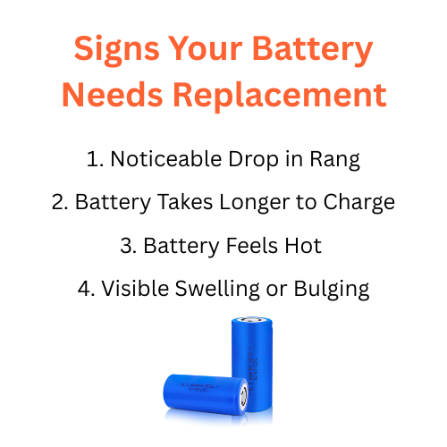

Signs Your Battery Needs Replacement
Every battery has a limited lifespan. Whether it powers your eBike, scooter, car, or solar setup, performance will eventually decline over time. Recognizing the early signs your battery needs replacement helps you avoid unexpected breakdowns, save money, and prevent further electrical damage. In this guide, we’ll walk through the most common symptoms of a weak or failing battery — and how to confirm if it’s truly time for a new one.
1. Noticeable Drop in Range or Runtime
The first and most obvious sign of a worn-out battery is reduced range. If your eBike that once covered 40 km now barely manages 25 km on a full charge, that’s a strong indicator of capacity loss. Lithium-ion cells gradually lose their ability to hold charge after hundreds of cycles.
Tip: Compare your current distance per charge to the average when the battery was new. A drop of more than 25–30% usually means cell degradation has set in.
2. Battery Takes Longer to Charge
Healthy cells accept charge efficiently. As they age, internal resistance increases, causing slower charging or chargers shutting off prematurely. If your charger light turns green faster than usual or takes double the normal time, both can signal internal imbalance.
Check: Measure total voltage after charging — if it’s below the rated full-charge voltage (for example, 41 V for a 36 V pack), capacity loss is confirmed.
3. The Battery Feels Hot During Use or Charging
Some warmth is normal, but overheating indicates deteriorating chemistry or failing protection circuits. Excess heat accelerates aging and can become dangerous if ignored.
Best practice: Stop using a battery that becomes uncomfortably hot to touch, even under light load. Overheating packs should be inspected by a technician or replaced immediately.
4. Visible Swelling or Bulging
A swollen or bloated battery case is a serious warning. This happens when gas builds up inside due to chemical breakdown. Continuing to charge or use a swollen battery increases fire risk.
Action: Disconnect it right away. Do not puncture or compress the pack. Place it in a non-flammable area and recycle it at an authorized center.
5. Inconsistent Voltage or Sudden Power Drop
If your eBike or device shuts down abruptly even though the indicator shows half charge, the cells have likely become imbalanced. Old batteries may discharge unevenly, causing one or more cells to drop below safe voltage levels.
Check: Use a multimeter to measure pack voltage before and after a ride. If the drop is abnormally large or fluctuates randomly, it’s a clear sign of deterioration.
6. Charger or BMS Error Lights
Many modern battery packs include a Battery Management System (BMS) that monitors cell health. If your charger or eBike display flashes error codes, or the BMS indicator shows “fault” or “service,” there could be shorted cells or protection failures.
Solution: While minor imbalance can sometimes be fixed by balancing charge, recurring errors indicate the pack is near the end of life and should be replaced.
7. Corrosion or Rust on Terminals
Moisture, humidity, or long storage can cause corrosion on metal terminals. This increases electrical resistance, resulting in voltage drops and unreliable connections.
Fix: Clean terminals gently with a dry cloth or soft brush. If corrosion reappears or terminals are pitted, the internal seal may be compromised — replacement is safer.
8. Battery Fails to Hold Charge After Sitting
If you leave the battery unused for a few weeks and it discharges on its own, self-discharge is likely high. Healthy lithium batteries retain 90–95% charge after a month of rest.
Best practice: Recharge every 30–60 days during storage. If your battery drops to near zero despite proper storage conditions, internal leakage or damage is occurring — time to replace.
9. Unusual Smell or Cracking Sound
Any burnt smell, cracking noise, or fizzing sound indicates internal shorting or venting gases. This is a critical safety hazard.
Action: Stop charging immediately, move the battery outdoors, and contact a recycling facility. Never attempt to open the casing yourself.
10. Age Beyond Expected Cycle Life
Even if your battery seems fine, age catches up. Most eBike lithium-ion batteries last between 500–800 charge cycles or about 3–5 years. After that, chemical degradation accelerates quickly.
Recommendation: If your battery is older than 4 years and shows any performance decline, plan for a replacement before it fails completely.
How to Confirm Battery Health
- Use a multimeter to check voltage after full charge and after discharge.
- Compare capacity (Ah or Wh) to manufacturer specifications.
- Visit a service center for a load-test report if unsure.
Safety Warning
Continuing to use a damaged or weak battery can cause power cuts, charger faults, or even fire hazards. If multiple symptoms appear at once — like low range and overheating — stop using the pack immediately and replace it with a genuine, manufacturer-approved battery.
Tips to Extend Your New Battery’s Life
- Charge to 80–90% for regular use.
- Store at 40–60% charge in a cool, dry place.
- Avoid riding or charging in extreme temperatures.
- Clean contacts periodically and avoid moisture.
Final Thoughts
Batteries rarely fail overnight — they give warnings first. By noticing reduced performance, heat, or charging issues early, you can plan a safe replacement before major failure. A fresh, healthy battery not only restores range and reliability but also improves your overall eBike experience.